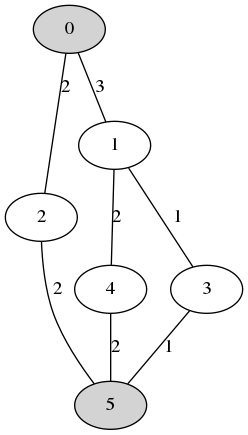

体验
2017-04-25 20:18
比赛终于要结束了，最终复赛没能进前四，止于中游。自从上周三把数据规模调大后，名次一直哗哗掉，无法挽救，试过好几种方案，没能搞定换挡问题，也就是说给你最优位置，你都找不到最优解，真是可怕。
复赛题目加了个档次条件，相当于2个NP问题了，一个是选址问题，一个就是换挡问题了。
目前复赛代码已开源：https://github.com/netcan/2017-HUAWEI-Codecraft/releases/tag/2.0
初赛的思路已经更新，可以翻到最后。
2017-04-09 22:40
今天复赛题目放出来了，增加的条件如下：
- cdn有好几个档次了，每个档次都有输出流量限制
- 每个网络节点增加部署费用
- 节点数量上万
考虑复赛后一周有6门左右的考试，所以要早点写了，不然爆零那多尴尬。。。
2017-04-04 10:27
之前因为交的程序可能概率性段错误，所以必须修复bug重新提交，防止最后重跑的话出事就gg了。然而修复了bug，却很难最优，这两天提交无数次，中级才出现过2次最优，弃坑了。复赛再搞起。
说一下关于定时器的问题吧，我用的是alarm定时器，非常精确，用它定时，时间一到会给进程发送SIGALRM信号，只需要捕捉这个信号，然后进行退出处理就行了。
2017-04-03 12:19
现在来说一下如何统计输出文件的cdn数量吧，懒得在代码中添加统计最终可行解的cdn数量了。
根据官方输出格式可知，第一行表示链路数量，第二行空行，那么从第三行开始就是起始链路了。链路的第一个数就是cdn的节点编号，从而可以统计出最终cdn数量。
$ time ./bin/cdn case_example/The\ second\ batch\ of\ test\ cases/2\ Advanced/case0.txt o
$ awk 'NR > 2 {printf $1; printf("\n") ;}' o | sort -g | uniq | wc -l
109首先用awk从第三行开始，提取第一列，也就是cdn编号，由于有重复编号，需要排序去重，最后统计出行数就是cdn数了。
如果要输出cdn的编号，可以这么做：
$ awk 'NR > 2 {printf $1; printf("\n") ;}' o | sort -g | uniq | tr '\n' ' ' && echo2017-04-02 20:02
今天遇到一个非常致命的bug，我在本地测试的时候，有时候会出现段错误，而且几率非常小，那是多么的恐怖，连复现定位都异常困难。
不过这个问题难不倒我，既然是有几率复现的，那么我只要记下程序开始运行的时间戳（因为我的随机种子是设置为时间戳），然后复现的时候，设置这个时间戳，重新跑，就能定位出错误了。
不断重复跑了将近一小时，才出现段错误，最后定位到的问题是对象没有初始化。。。
2017-04-01 21:13
今天愚人节。。昨晚看到ftp下载失败，得了0分，吓的一大早起来交，却不能交，感觉前十大换血一样= =莫名慌张。
不过看到校友silverfly在20多名，心里还是稳了，因为我们交流过，都是启发式。
现在贴一下战绩吧，三个样例没跑好，等排名掉了在重新交一下吧。（PS: 大规模样例曾跑出199055的满分成绩，三组数据成绩都需要看脸）。


这里我补充我最近遇到一个特别脑残（也很有意思吧）的bug，肯定是没睡醒导致的。
我昨天跑启发式算法的时候，发现88秒能迭代5000多次呢（能达到跳出条件），瞬间觉得不可思议，我把迭代系数调大，目的让它能慢一些，结果还是能在88秒内达到跳出条件，不过这个时候，迭代58万次= =，费用流能跑这么多次？？也正是这个bug，导致我一天白调参了。
为了更具体的说明，我举个例子，仅供参考。
int iterationCnt = 0;
while(T > 0.1) {
for(int i = 0; runing && i < N; ++i) {
...
}
...
T *= delta;
++iterationCnt;
}这里的runing标记位，等到达足够的时间，会变为false，考虑到内循环花的时间比外循环长，我很天真的把runing标记位放到内循环中，以便runing变为false的时候能够及早跳出，不会超时。也正是这个原因，我为我88秒内能跑5000多次费用流（迭代次数）而自豪。
前面我说了，把迭代系数调大，能跑58万次呢。我隐隐约约觉得这是个bug，但是又感觉不到哪里有问题。
然后我打算给外循环也加上runing位，即
while(runing && T > 0.1)跑了一下，发现88秒居然只迭代了200多次！我只是在外循环加个runing位而已，性能损失20倍？！
不管了，和队友打红色警戒三了。
现在切入正题，为何我把runing加在外循环会导致性能“损失”。其实放到外循环才是真实的迭代次数，因为只放到内循环，那么当runing变为false的时候，导致内循环不干活，外循环拼命跑，直到达到跳出条件….
2017-03-30 23:21
经过一天的优化、调参，基本稳定了。坚持到最后吧。

2017-03-29 21:34
做了点微小的贡献，希望能攒点人品。

2017-03-29 20:49
最近很多同学问我，怎么输出路径，老是超流。前面说过了不能保存增广路径，却没说怎么找路径，那我在这里细说一下吧。
跑费用流的时候，算法基本上都是找增广路径，比如某条边上流过的流量为3/5（斜杠后面的表示满流为5），那么它的反向边变为-3/0（同理，因为流量为负，满流为0），这个表示我以后可能会流过-1, -2, -3的流量，亦即回流（细说一下，比如流过-1，表示我从3变为2，实际上流过的流量为2），所以光保存增广路径是不行的，因为算法后面有可能回流，一回流，那么实际流量可能会减少，而你之前保存了，那么当然会超流。
现在来说说跑完费用流后怎么保存实际路径。跑完费用流后，边上流过的流量是知道的。所以可以从源点出发，进行深度优先搜索（同时记录这条路径上的最小流量），直到找到汇点，那么保存这条路径。而从汇点回溯的时候，就扣除这部分的流量，如果这个点的流量还有，那么就访问这个点的下一个点，直到找到汇点，然后保存路径，再回溯，以此类推。
这里我举一个例子吧，正在作图，稍后继续。

加入源点是0，汇点是5，跑完费用流后，得到如上所示的流量分布。
- 从源点0开始出发，进行深度优先搜索，比如走到1，记录此时的最小流量3，然后从1开始出发，走到3，记录此时的最小流量1，接着从3出发，走到汇点5，那么保存这条路径（0->1->3->5，流量为1）。
- 从汇点5回溯，回溯到3，减去该点流量：1-1=0，没有流量了，继续回溯，回溯到点1，减去该点流量：3-1=2，还剩有流量，那么不回溯了，接着从1走到它的下一点4，记录最小流量2，从4走到汇点5，保存这条路径（0->1->4->5，流量为2）
- 从汇点5回溯，回溯到4，减去该点流量：2-2=0，没有流量了，继续回溯，回溯到点1，减去该点流量：2-2=0，没有流量了，继续回溯，回溯到源点0，这时候源点流量为3这条边流量用完了，那么选择下一个邻接点2，记录最小流量2，从2走到下一个汇点5，记录这条路径（0->2->5，流量为2）
经过以上几个步骤，所有路径都找出来了。
2017-03-28 16:23
现在掉到20来名了，经过这两天的尝试/优化，终于把小规模数据的时间/效率提上去了，费用能跑到21920，可是中规模和大规模跑的不是很好分数比较低，达到瓶颈了，比大佬差那么个几千吧。

2017-03-25 15:20
刚刚群里有位同学和我一样，只保存了增广路径作为结果，最后我们都是因为这个导致流量超了。
昨晚我能想到的原因是有可能输出的路径带有负流量，比如要求5，你输出了3条路径3、3、-1，虽然符合要求，但是3+3=6就有可能超。
然后跑了一晚上样例，没发现有负流量，觉得可能官方数据有可能会触发负流量，然后通过时间来判断是不是因为官方数据触发了负流量，结果也没有。
真是个坑。。
2017-03-25 10:58
寻路部分已解决，目前提交几次都有分了。大概是这样的：

2017-03-25 09:55
官方判题服务器没有问题，我的费用流保存的是增广路径，所以流量超了，已经重写了寻路那部分。
2017-03-25 00:24
可能官方判题器出现bug了，现在又在修复，应该是判断链路流量是否超过总带宽的那部分错了，有人把容量调为一半，就有分了。
睡觉睡觉，等待修复，希望明天一大早就给我惊喜吧。
2017-03-24 22:00
昨天官方数据有重边bug，后2组没分，没什么意义，就不管代码了。
今天官方修复了bug，一大早就起来提交，结果比较奇葩了，前2组没分，第3组倒有。有时候就只有第2组没分，反正就是第2组没分。
判题大哥说我流量超了，仔细检查了好久，直到刚刚（21点），才感觉到哪里不对劲了，改了改，应该有分了，功夫不负有心人。这个漏洞比较有意思，非常难发现，本地测试的时候还没触发过，等赛后再更新吧。
由于官方评测系统的数据和练习用的数据规模差不多，这里直接上结果好了。比直连大法好就行了，毕竟我前几天还是用直连大法呢。
2017-03-22
华为挑战赛去年就了解到了，一直没参加，记得去年是道经过指定结点的最短路，今年一看题，想了好久没头绪（YY一个方案，写的时候发现不可行，浅尝辄止），居然有点后悔去年没参赛。
一开始就先写了一个将cdn全部放消费结点的方案，那时候名次还很好，20左右。直到昨天跌出40，形势刻不容缓。
3月21开始查看相关资料（建议看算法导论最大流那章，理解了残余网络，增广路径就好办了），写了最小费用流，3月22一早上加一下午写了输出费用流路径，然后开始考虑选址问题，开始用随机算法，每次随机选几个服务器，跑来跑去的解都比全放消费结点的成本高。
接着写了一晚上的启发式搜索，因为初始参数的原因，导致自己一直怀疑算法有问题，却又坚定不移，期间也由于STL使用不当(erase/insert)导致非常难调的bug。
之所以一直没放弃，是因为我跑样例的时候，偶而出现那么几次可行解，虽然只比全部放消费结点便宜了那么几块钱，但仍让我觉得可行。
就在12点熄灯的那一刻，我几乎快要绝望了，就在最后，我调下参数，观察了一下输出，想看看最后的结果，结果让我大吃一惊，居然是最优解（群里有人发过）！然后我忍不住又试了两组数据，也是最优解，最后样例一次性全部跑出！！瞬间心态爆炸。。
PS: minCost(2042/2340)表示跑出来的可行解为2042，2340表示cdn全部放消费节点直连的服务器上所需要的费用。

然后就想试试大规模数据，从群里下了个1500结点的数据跑了下，得了如下可行解，可能不是最优解，但总比全部放消费结点好吧。

心情已经非常激动了，这个比赛让我非常有成就感，比我大学做过的事情有意义多了，从来没有这么开心过，非常感谢华为。
正好赶上官方更新初中高级数据，还没来得及跑分就关闭系统更新了。。太耐人寻味了。
程序输出
这是针对官方练习样例跑出来的结果：
caseDemo.txt
这组样例是官方题目介绍的图：
$ time ./bin/cdn case_example/caseDemo.txt o
line num is :62
Deploy CDN(3):
3 22 0
=====Solution======
3->3 flow: 45
22->2 flow: 28
22->24->11 flow: 11
3->19->5 flow: 24
3->24->11 flow: 12
0->16->6 flow: 8
0->8->0 flow: 36
0->7->10 flow: 10
3->1->19->5 flow: 2
3->1->16->6 flow: 7
3->2->25->9 flow: 7
0->9->11->1 flow: 13
0->6->5->8 flow: 13
0->2->25->9 flow: 8
3->1->18->17->4 flow: 2
0->1->18->17->4 flow: 9
0->1->15->13->7 flow: 11
0->2->4->5->8 flow: 5
0->2->1->15->13->7 flow: 2
22->21->8->0 flow: 4
Flow :257/257 Cost: 783/1200case0.txt
为了说明路径/CDN位置的随机性，这里随意给出了2组最优费用，但是路径/CDN位置不一样：（其实是一样的，真尴尬）
$ time ./bin/cdn case_example/case0.txt o
line num is :110
Deploy CDN(7):
7 37 15 13 22 43 38
=====Solution======
7->3 flow: 22
37->4 flow: 46
15->6 flow: 49
13->5 flow: 40
22->2 flow: 36
43->0 flow: 24
38->7 flow: 63
13->3->32->34->8 flow: 8
43->44->1 flow: 15
Flow :303/303 Cost: 2042/2340
./bin/cdn case_example/case0.txt o 22.40s user 17.75s system 99% cpu 40.167 totalcase1.txt
$ time ./bin/cdn case_example/case1.txt o
line num is :111
Deploy CDN(7):
17 6 7 41 48 13 35
=====Solution======
35->0 flow: 57
13->5 flow: 99
48->6 flow: 82
17->7 flow: 27
6->2 flow: 32
7->3 flow: 28
41->4 flow: 25
6->5->1 flow: 10
7->9->0->22->23->8 flow: 21
Flow :381/381 Cost: 2136/2520
./bin/cdn case_example/case1.txt o 23.02s user 17.42s system 99% cpu 40.441 totalcase2.txt
$ time ./bin/cdn case_example/case2.txt o
line num is :127
Deploy CDN(6):
48 18 29 38 12 23
=====Solution======
23->2 flow: 47
12->6 flow: 41
38->0 flow: 58
31->7 flow: 34
48->8 flow: 47
18->3 flow: 80
29->4 flow: 70
23->21->5 flow: 13
18->22->21->5 flow: 37
12->10->13->0->6->5->1 flow: 4
Flow :431/431 Cost: 1692/1890
./bin/cdn case_example/case2.txt o 19.03s user 14.30s system 99% cpu 33.344 totalcase3.txt
$ time ./bin/cdn case_example/case3.txt o
line num is :111
Deploy CDN(5):
10 35 26 29 22
=====Solution======
26->5 flow: 55
35->8 flow: 50
10->7 flow: 32
29->4 flow: 22
22->2 flow: 64
22->21->3 flow: 22
35->33->6 flow: 6
10->0->4->47->0 flow: 5
22->20->21->3 flow: 7
22->24->21->3 flow: 18
10->0->2->3->31->1 flow: 1
29->27->3->31->1 flow: 13
35->32->4->47->0 flow: 23
35->32->33->6 flow: 10
35->34->33->6 flow: 12
Flow :340/340 Cost: 2111/2700
./bin/cdn case_example/case3.txt o 16.56s user 12.22s system 99% cpu 28.788 totalcase4.txt
$ time ./bin/cdn case_example/case4.txt o
line num is :113
Deploy CDN(7):
20 12 22 37 15 48 26
=====Solution======
20->0 flow: 22
12->6 flow: 52
22->3 flow: 31
26->1 flow: 16
48->4 flow: 20
15->5 flow: 70
37->8 flow: 31
37->38->2 flow: 13
37->3->28->7 flow: 17
12->2->4->3->28->7 flow: 3
37->36->38->2 flow: 1
37->40->38->2 flow: 5
12->16->41->38->2 flow: 3
Flow :284/284 Cost: 1967/2160思路
我用多源多汇最小费用最大流+启发式算法来解决这个NP hard问题。
2017-04-25 20:25
现在来更新思路可能有点晚了，由于复赛成绩不理想，我就说说我初赛是怎么做的吧。
初赛代码：https://github.com/netcan/2017-HUAWEI-Codecraft/releases/tag/1.0
启发式我试过模拟退火、遗传算法、粒子群算法、禁忌搜索，最终选择了遗传模拟退火算法相结合来实现。
先说说初始状态，最后我们选择对直连状态进行删点作为初始状态，删点按照消费节点流量需求从小到大删，如果删了费用变小就删，否则不删，直到处理完所有消费节点，得到初始状态。
接下来的是遗传模拟退火算法，可以参考《现代优化计算方法（第二版）》第4.5节。
遗传用bitset进行01编码，长度为网络节点数量，0表示不放，1表示放。
- 首先初始化种群数$MAXPOP$、温度$t_0$，迭代次数$k = 0$，我只有一条个体是初始状态，其他都是随机。
- 进行模拟退火阶段，遍历种群中的个体$s_i$，计算费用$f(i)$，生成新的状态$s_j$（寻找邻域内的状态），计算新状态的费用$f(j)$，接受概率为
$$
Accept(s_j) = \min (1, exp(-\dfrac{f(j) - f(i)}{t_k}))
$$
若接受则作为新种群个体$s_j$，否则丢弃，用回$s_i$，同时更新最小费用$f_{min} = \min(f_i, f_j, f_{min})$。这个阶段遍历完后，新种群数应为$MAXPOP$。 - 在新种群中，遍历各个个体，计算其适应度： $$ fitness_i(t_k) = exp(-\dfrac{f(i)-f_{min}}{t_k}) $$
- 然后按照轮盘赌进行选择、交叉、变异操作，最终得到一个种群，将这个种群作为步骤2的种群，更新温度$t_{k+1} = t_k \cdot delta$，更新$f_{min} = \infty$，执行步骤二。
当温度达到最低温度，或者时间到了，输出整个过程中的最优可行解。
关于退火中选择的邻域状态，我是从当前状态，随机选一个点$u$，然后在随机选这个点的邻接点$v$，将当前状态的$u$点改成$v$点，作为新的状态。形象点来说就是选一个点移动到它下一个点。